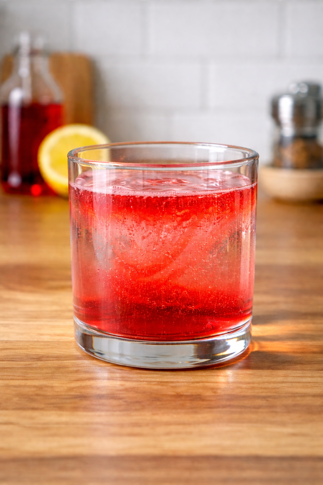
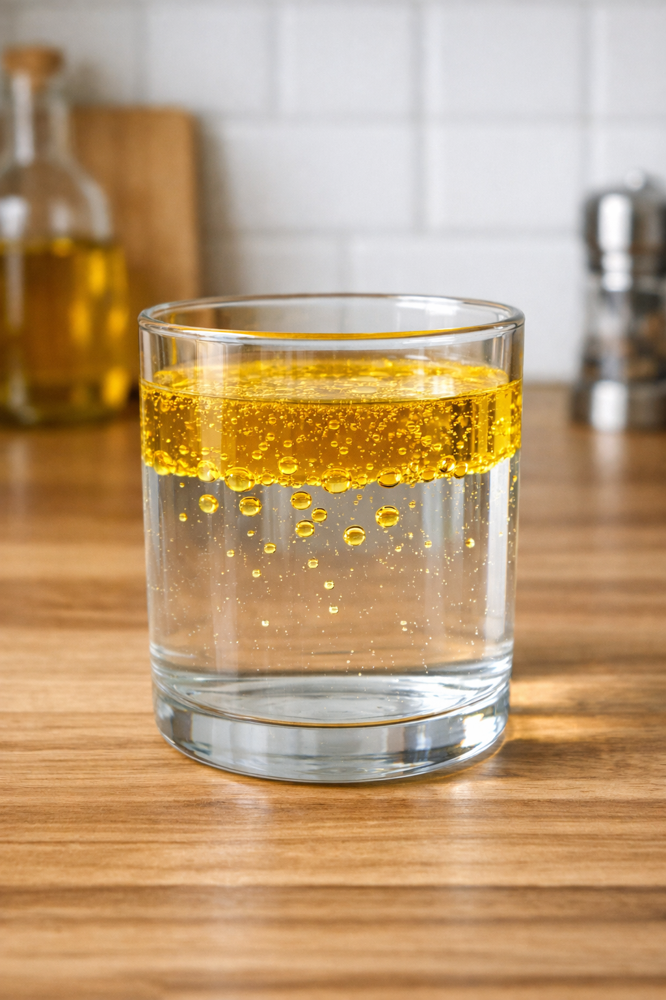
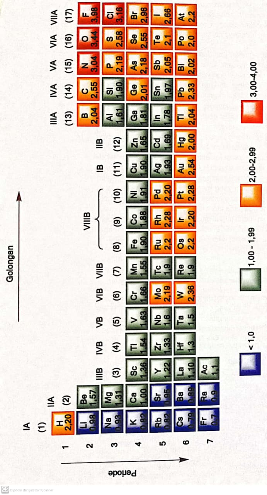
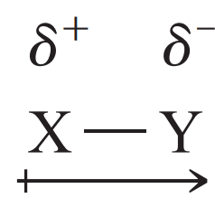
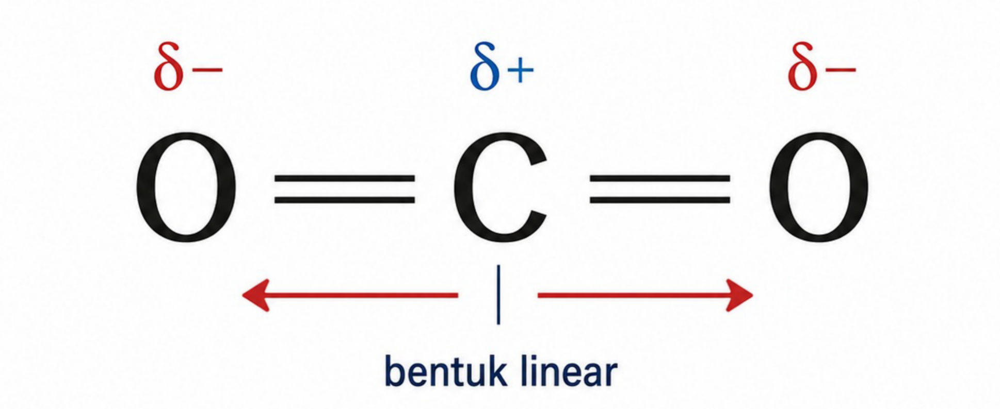

Isi identitas dulu ya:
Pernahkah kalian melihat sirup yang dituangkan ke dalam air? Awalnya warna sirup tampak pekat di satu bagian, lalu perlahan menyebar dan akhirnya bercampur merata ketika diaduk.

Sirup dapat bercampur dengan air
Sekarang bandingkan dengan minyak. Ketika minyak dicampurkan ke dalam air, meskipun sudah diaduk, minyak tetap terpisah dan membentuk lapisan di permukaan.

Minyak tidak bercampur dengan air
Perbedaan ini bukan sekadar karena “kental” atau “ringan”. Ada sifat partikel penyusunnya yang membuat suatu zat mudah bercampur atau justru terpisah. Sifat itu berkaitan dengan kepolaran.
1) Menurutmu, mengapa sirup bisa bercampur dengan air, sedangkan minyak tidak?
Menurutmu penyebab utama fenomena ini adalah…
Klik tab materi berikut untuk melihat ringkasan sebelum menyelesaikan misi.
Jika simulasi tidak tampil (karena kebijakan perangkat/jaringan), buka langsung: PhET Molecule Polarity
| No | Kondisi Keelektronegatifan A–B | Muatan Parsial (δ⁺/δ⁻) | Arah Panah Dipol | Momen Dipol Ikatan | Kepolaran Ikatan |
|---|---|---|---|---|---|
| 1 | Keelektronegatifan A = B | ||||
| 2 | Keelektronegatifan B sedikit > A | ||||
| 3 | Keelektronegatifan B jauh > A |
Kepolaran ikatan berkaitan dengan kemampuan atom menarik pasangan elektron dalam ikatan kovalen. Perbedaan tarikan ini menyebabkan pembagian elektron menjadi tidak merata dan dapat menghasilkan molekul polar atau nonpolar.
Dalam pembentukan ikatan kovalen, elektron dibagi, tetapi atom dari unsur yang berbeda jarang membagi elektron secara sama rata.
Pembagian yang tidak merata ini menyebabkan salah satu atom memperoleh “bagian” elektron yang lebih besar dibanding atom lainnya.
Kemampuan atom suatu unsur untuk menarik elektron ke dirinya sendiri dalam ikatan kovalen disebut keelektronegatifan.
Nilai keelektronegatifan bersifat relatif, artinya hanya bermakna jika dibandingkan dengan unsur lain.
Skala yang banyak digunakan adalah skala Pauling yang dikembangkan oleh Linus Pauling.
Unsur yang paling elektronegatif adalah fluorin dengan nilai 4,0. Secara umum, nonlogam memiliki keelektronegatifan lebih tinggi daripada logam.

Tabel skala keelektronegatifan menurut Pauling
Dalam ikatan kovalen antara dua atom yang memiliki keelektronegatifan berbeda, atom yang lebih elektronegatif menarik pasangan elektron ikatan sebagian menjauh dari atom yang kurang elektronegatif.
Akibatnya, atom yang lebih elektronegatif memperoleh muatan negatif parsial (δ−) dan atom yang kurang elektronegatif memperoleh muatan positif parsial (δ+).
Terjadi jika pasangan elektron dibagi tidak merata karena adanya perbedaan keelektronegatifan.
Akibatnya muncul kutub positif dan kutub negatif parsial.

Contoh distribusi elektron tidak merata pada ikatan polar
Terjadi jika pasangan elektron dibagi merata atau perbedaan keelektronegatifannya sangat kecil.
Akibatnya tidak terbentuk kutub parsial yang berarti.
Tambahkan gambar ikatan nonpolar di sini jika ada
Molekul air bersifat polar karena memiliki bentuk bengkok sehingga resultan kutub tidak saling meniadakan.
Molekul H₂O memiliki resultan dipol
Molekul karbon dioksida bersifat nonpolar karena bentuknya linier simetris, sehingga resultan kutub saling meniadakan.

Molekul CO₂ simetris sehingga dipol saling meniadakan
Berdasarkan hasil pengamatan pada simulasi PhET, jelaskan hubungan antara perbedaan keelektronegatifan atom dengan munculnya muatan parsial, arah dipol ikatan, dan kepolaran ikatan.
Petunjuk: Ingat apa yang terjadi pada elektron ikatan ketika salah satu atom lebih elektronegatif.
Petunjuk: Perhatikan arah panah dipol pada simulasi PhET.
Petunjuk: Bandingkan kondisi EN sama, sedikit berbeda, dan sangat berbeda.
Pada tahap ini kamu akan menganalisis beberapa molekul berdasarkan jenis atom penyusun, keelektronegatifan, dipol ikatan, serta menentukan kepolaran molekul secara keseluruhan.
Tabel Skala Pauling
| No | Molekul | Atom Penyusun | Dipol Ikatan (Ada/Tidak) | Arah Dipol Ikatan | Kepolaran Molekul |
|---|---|---|---|---|---|
| 1 | H₂ | H – H | |||
| 2 | Cl₂ | Cl – Cl | |||
| 3 | SO₂ | S – O | |||
| 4 | H₂O | H – O | |||
| 5 | CO₂ | C – O | |||
| 6 | NH₃ | N – H |
1) Apakah semua molekul dengan ikatan polar selalu bersifat polar? Jelaskan.
2) Mengapa molekul CO₂ bersifat nonpolar meskipun memiliki ikatan polar?
3) Bandingkan H₂O dan CO₂. Apa perbedaan utama yang memengaruhi kepolaran molekulnya?
Jawablah soal berikut dengan memilih satu jawaban yang paling tepat. Setelah selesai, klik SELESAI & KIRIM untuk melihat hasil dan pembahasan.
Dalam suatu ikatan kovalen, atom yang memiliki keelektronegatifan lebih tinggi akan…
Ikatan antara dua atom dengan selisih keelektronegatifan mendekati nol akan membentuk ikatan…
Molekul CO₂ memiliki ikatan C–O yang bersifat polar, tetapi molekul CO₂ secara keseluruhan bersifat nonpolar karena…
Molekul H₂O bersifat polar karena…
Minyak tidak dapat bercampur dengan air karena…